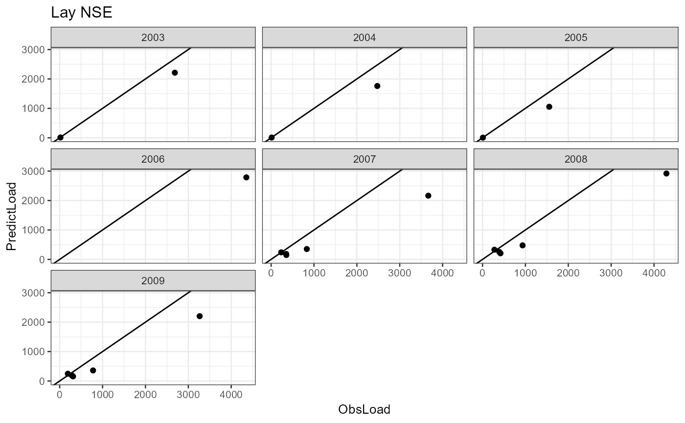

Scatter plot comparing observed vs modeled loads by year
Source:R/rgreen_plots.R
simobs_annual_plot.RdPlot
Arguments
- catch_data
data frame. Definition of the topological sequence of catchments.
- annual_data
data frame. Sources of nutrient for each year and catchments.
- alpha_p
numeric. First model parameter, the basin retention coefficient.
- alpha_l
numeric. Second model parameter, the river retention coefficient.
- sd_coef
numeric. Third model parameter, fraction of domestic diffuse sources that reaches the stream network.
- years
numeric. Years to be shown in the plot.
- name_basin
character. The title of the plot.
Value
Multiple scatter plot and a data frame with annual nutrient (nitrogen or phosphorus) load for all catchments in the basin
Examples
# \donttest{
# the data of the TN scenario
data(catch_data_TN)
data(annual_data_TN)
# the parameter to assess the basin model
alpha_p <- 35.09
alpha_l <- 0.02
sd_coef <- 0.2
# years in which the plot will we shown
years <- 1990:2018
# generating the scatter plot comparing observed vs modeled loads by year
name_basin <- "Lay NSE"
simobs_annual_plot(catch_data_TN, annual_data_TN, alpha_p, alpha_l,
sd_coef, years, name_basin)
#> [1] "Calculating year: 1990"
#> [1] "Calculating year: 1991"
#> [1] "Calculating year: 1992"
#> [1] "Calculating year: 1993"
#> [1] "Calculating year: 1994"
#> [1] "Calculating year: 1995"
#> [1] "Calculating year: 1996"
#> [1] "Calculating year: 1997"
#> [1] "Calculating year: 1998"
#> [1] "Calculating year: 1999"
#> [1] "Calculating year: 2000"
#> [1] "Calculating year: 2001"
#> [1] "Calculating year: 2002"
#> [1] "Calculating year: 2003"
#> [1] "Calculating year: 2004"
#> [1] "Calculating year: 2005"
#> [1] "Calculating year: 2006"
#> [1] "Calculating year: 2007"
#> [1] "Calculating year: 2008"
#> [1] "Calculating year: 2009"
#> [1] "Calculating year: 2010"
#> [1] "Calculating year: 2011"
#> [1] "Calculating year: 2012"
#> [1] "Calculating year: 2013"
#> [1] "Calculating year: 2014"
#> [1] "Calculating year: 2015"
#> [1] "Calculating year: 2016"
#> [1] "Calculating year: 2017"
#> [1] "Calculating year: 2018"

#> HydroID To_catch Shreve LakeFrRet NrmLengthKm BB Year ObsLoad
#> 1: 368447 -1 95 0 0.064614 0.9987086 1990 NA
#> 2: 361210 361187 1 0 0.000839 0.9999832 1990 NA
#> 3: 361226 361187 1 0 0.018375 0.9996326 1990 NA
#> 4: 361076 361195 1 0 0.010270 0.9997946 1990 NA
#> 5: 361187 361195 2 0 0.011948 0.9997611 1990 NA
#> ---
#> 5477: 366771 368429 2 0 0.118674 0.9976293 2018 NA
#> 5478: 368429 368430 3 0 0.027378 0.9994526 2018 NA
#> 5479: 368297 368430 91 0 0.006914 0.9998617 2018 NA
#> 5480: 368431 368447 1 0 0.000839 0.9999832 2018 NA
#> 5481: 368430 368447 94 0 0.001183 0.9999763 2018 NA
#> CatchToRiver CatchLoad
#> 1: 33.13114226 1701.4211665
#> 2: 0.96919763 0.9691814
#> 3: 7.03045820 7.0278750
#> 4: 4.66548836 4.6645302
#> 5: 5.48854330 13.4823775
#> ---
#> 5477: 101.16854022 139.8616163
#> 5478: 5.42668934 195.1085350
#> 5479: 0.35984310 2818.9702177
#> 5480: 5.71391809 5.7138222
#> 5481: 0.01277275 3014.0202129
# }